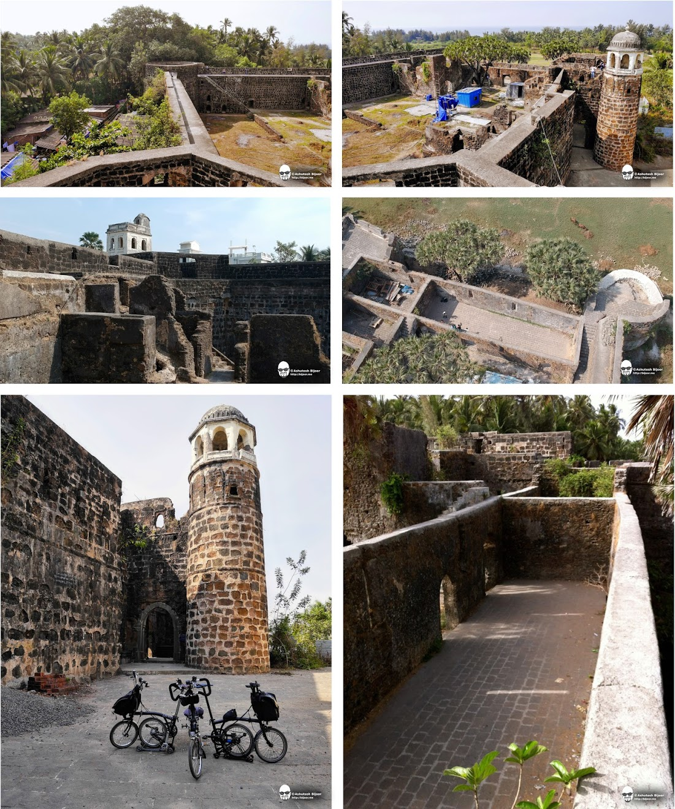
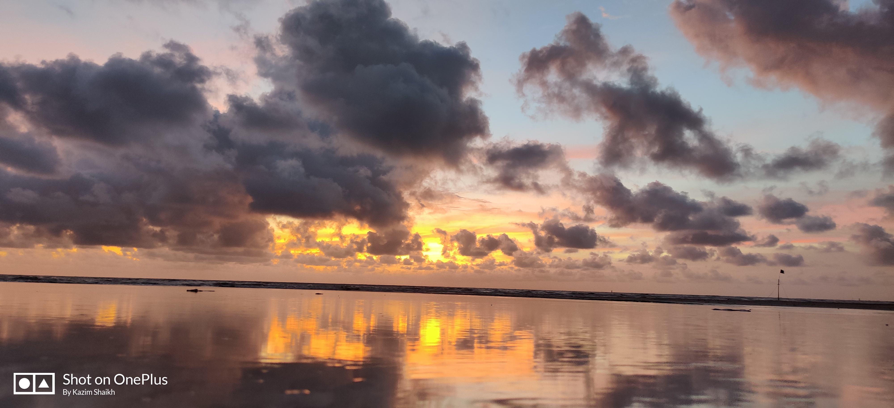

Shirgaon Fort

- Shirgaon Fort / Shirgao Fort (Marathi: शिरगाव किल्ला) is a fort located 6.5km from Palghar, in Palghar district, of Maharashtra
- This fort was built during Yadava of Devgiri in 1225 A.D.[1] This fort was under the Gujarati Musalman rulers in 1432, followed by the Bahamani Dynasty. After the defeat of Bahamani dynasty, the fort was under the Ahmednagar Sultanate for a short period. All the forts close to Vasai fort were won by Portuguese in 1520-1533. In November 1737 Maratha army tried to capture the fort but, retreated in December 1737. After the siege of Vasai fort, Maratha army captured the fort on 22 January 1739.[2] The Marathas repaired the fort in 1772 under the leadership of Chimaji Appa. The Fort was captured by British in 1818.
- It is located around 6 Kms from the main station and neighbours the Shirgaon Beach for a perfect historical combination.
- A recent Movie shoot of the film "Sarbjit" which took place in the fort led to an exponential increase in its popularity.
- The Fort is rectangular in shape. The entrance gate is east facing immediately followed by another gate at a right angle to the earlier. There is the year 1714 inscribed on near the second gate. There are total five bastions. The four bastions at the four corners are octagonal, while the fifth one at the entrance gate is circular. The vestibules for guards near the entrance gate are in good condition. There also exists one medieval Cannon. It takes about an hour to walk around the parapet wall and visit all the places of the fort



